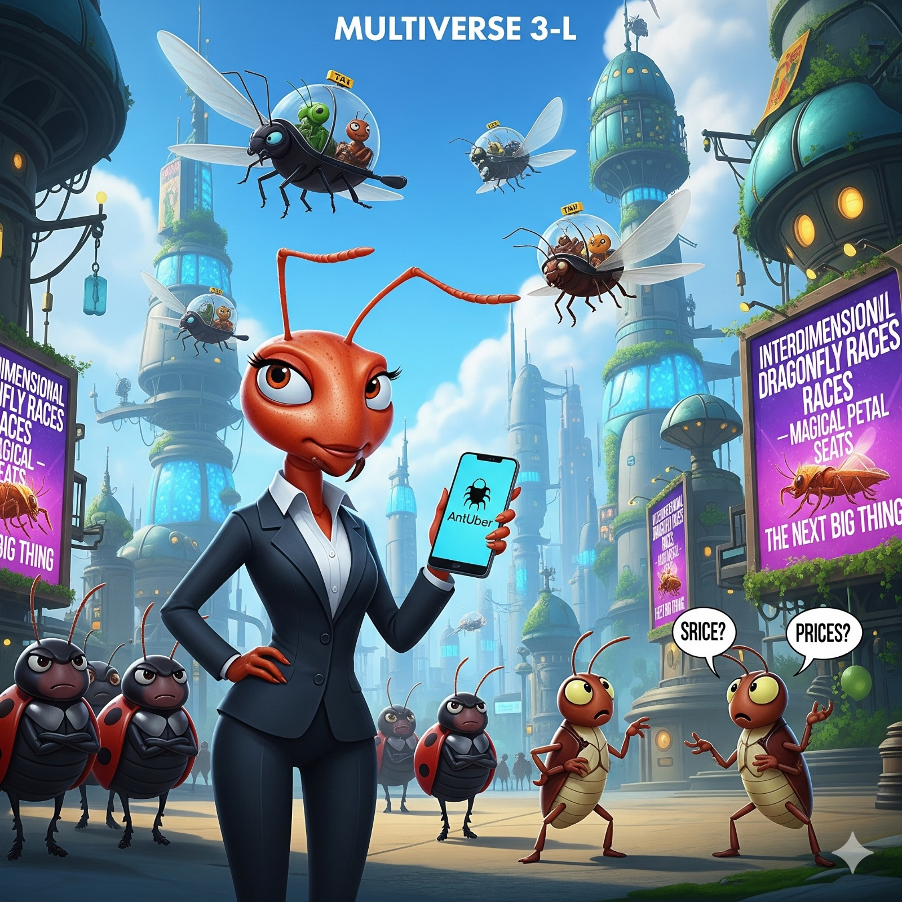

üíº Formiga abre startup de transporte
No Multiverso 34-Z, uma formiga chamada Zeca tropeçou em um dispositivo alienígena enquanto explorava um parque. Ao ativá-lo, foi transportado para uma dimensão paralela onde tudo era feito de doces.
No Multiverso 3-L, a vida das formigas nunca mais foi a mesma após o surgimento do aplicativo AntUber, criado pela visionária Formiga Clara. O serviço consiste em corridas montadas em besouros voadores, que transportam formigas, grilos e até gafanhotos em viagens rápidas pelos ares. A novidade já se tornou um sucesso absoluto, mas também gerou controvérsia. Grilos reclamam dos preços noturnos, e joaninhas acusam o aplicativo de monopolizar o setor de transporte. Apesar disso, o AntUber já anunciou planos de expansão: em breve será possível pedir uma corrida em libélulas interdimensionais, com direito a assentos de pétala almofadada.
